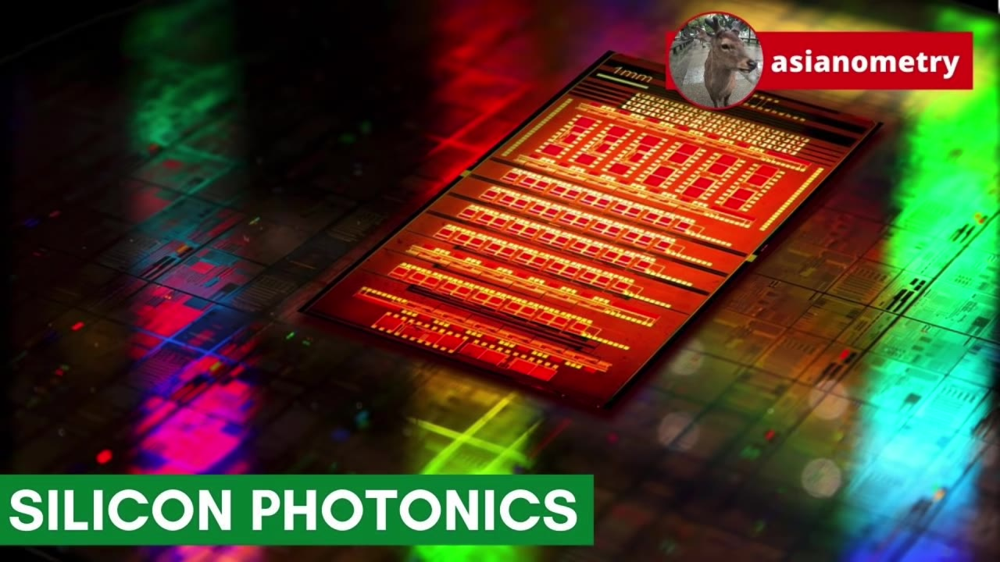
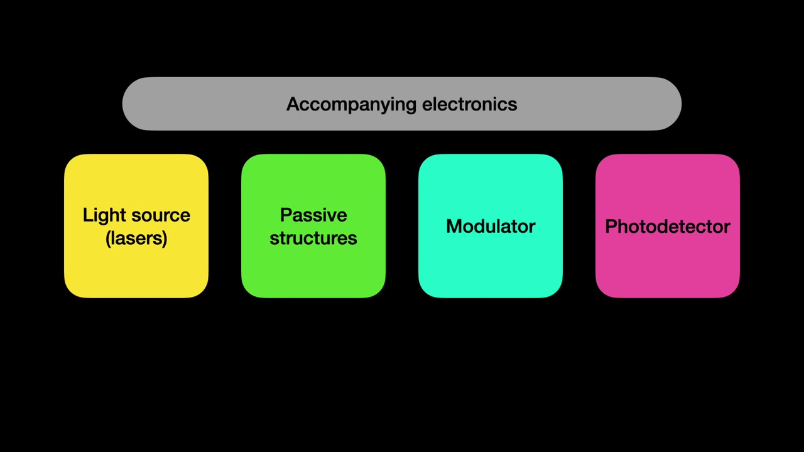
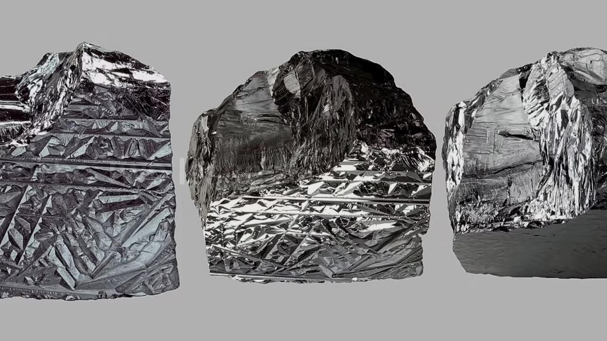
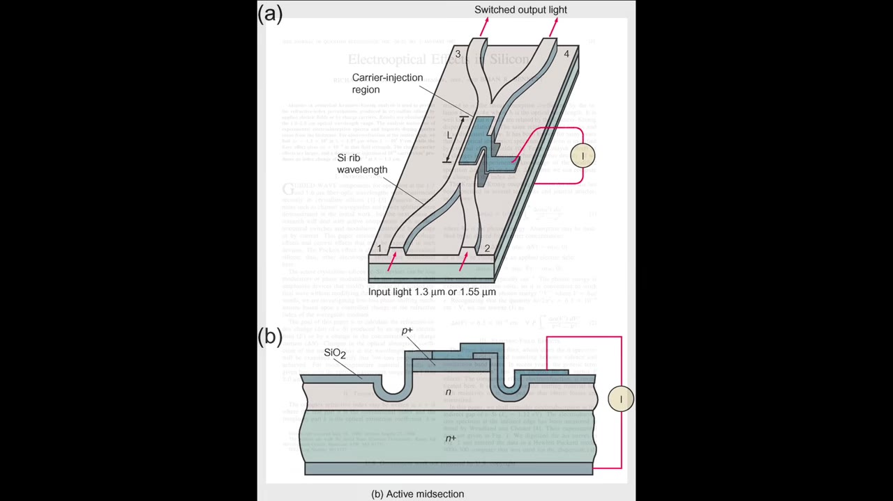
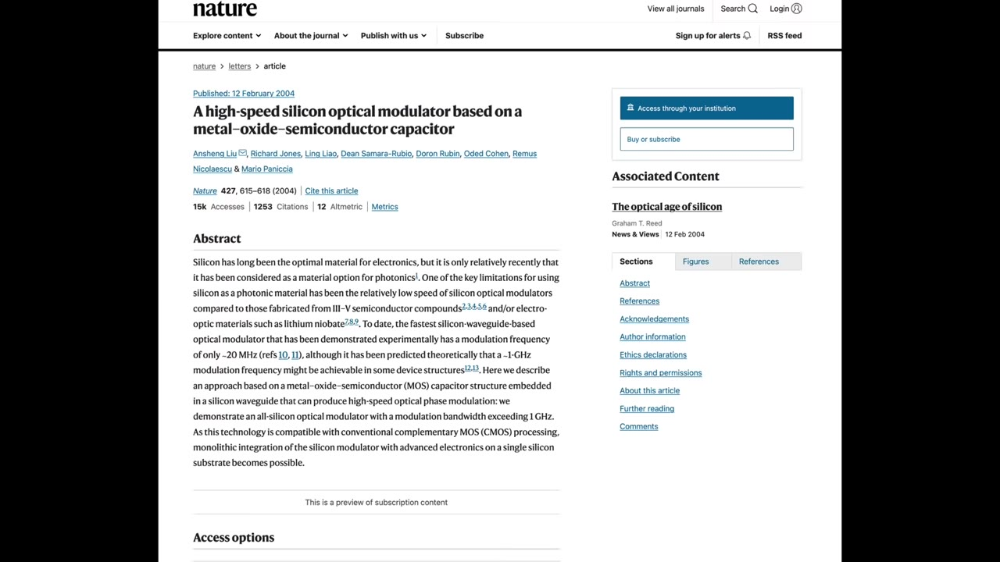
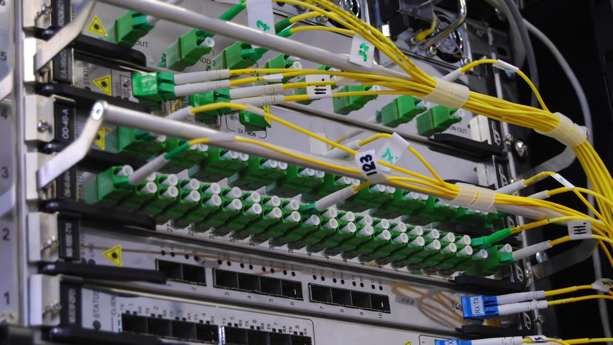
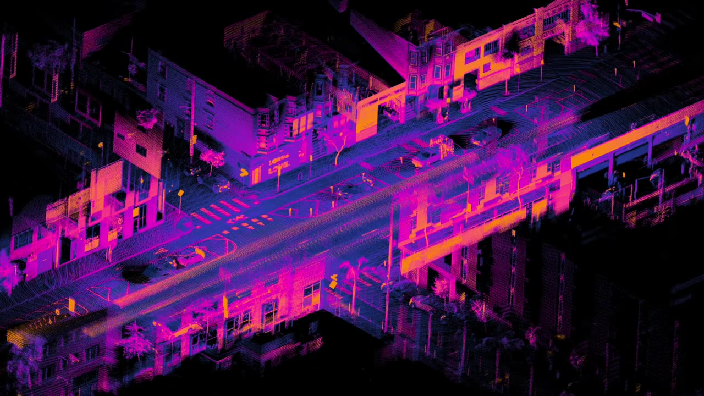
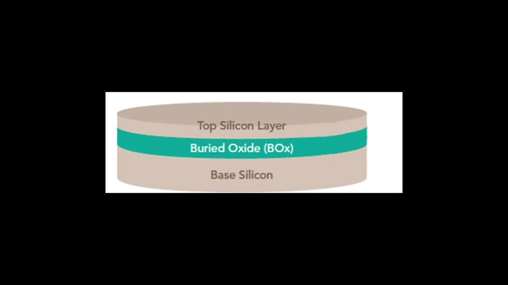
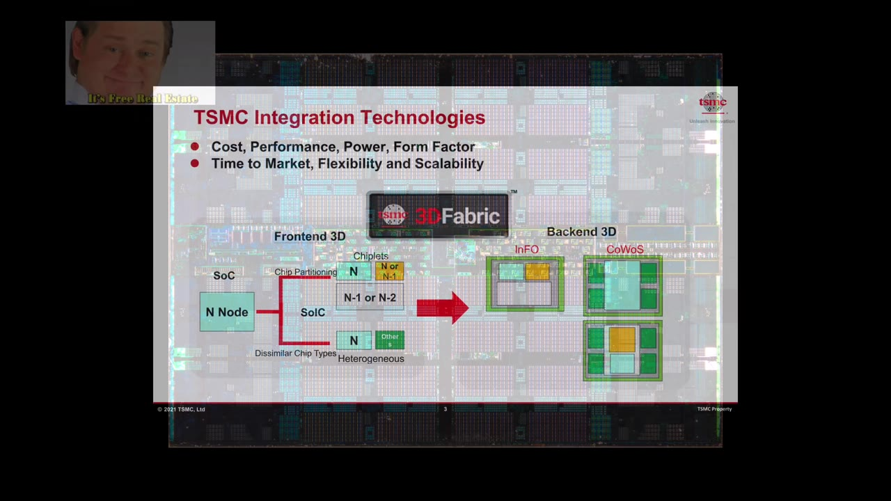

Bringing the titanic scale of CMOS manufacturing to the world of light is a decades-old dream. Asianometry traces silicon photonics from a 1987 paper to today's data-center transceivers — and asks whether it can ever find a market big enough to matter.
Watch on YouTubeSilicon photonics is what you get when you apply modern nanoscale CMOS processes to the optical realm — the same move that turned mechanical structures into MEMS, now aimed at light. Instead of pushing electrons through copper, the idea is to transmit and manipulate photons on a chip.

If MEMS is the result of applying modern nanoscale CMOS processes to the mechanical world, then doing the same for the optical realm gives us silicon photonics.— Asianometry
The 1970s dream was a monolithic chip — everything built from a single material system — that could generate, route, and read light. Asianometry breaks it into five parts: a light source (usually a laser), passive structures to bend and split light, a modulator and a photodetector to convert between electrical and optical signals, and ordinary CMOS electronics to support them.

A laser to produce the light, ideally on-chip.
Waveguides that bend, guide, filter, split, and combine — optical fiber's job, but on the die.
Convert electrical signals to light and back; a part that does both is a transceiver.
Traditional support logic for encoding and decoding.
Two properties of crystalline silicon make a fully integrated, all-silicon photonic chip extremely hard. First, silicon has an indirect band gap, so on its own it cannot emit light — no LED, no laser, no light source. Second, silicon doesn't exhibit the Pockels effect, the phenomenon that lets an electric field change a material's refractive index — so it can't natively modulate light either.

Silicon photonics as we know it starts in the mid-1980s with Richard Soref. His 1987 paper, "Electrooptical Effects in Silicon," showed silicon could be manipulated to adjust its refractive index, and the industry soon replicated a semiconductor's elementary p-n junction inside a photonic waveguide. For the missing laser, engineers settled on workarounds: an external laser sitting off-chip, or bonding a pre-made laser of a different material — indium phosphide — onto the silicon, known as hybrid integration.

A silicon-based laser is considered the holy grail of the silicon photonics space, the final piece of the puzzle.— Asianometry
With the light source punted to a workaround, the modulator became the proving ground. In 2004 Intel announced the first silicon-based high-speed optical modulator — bandwidth over 1 GHz — using a Mach-Zehnder interferometer (MZI) that splits light into two paths and recombines them to encode 1s and 0s. Then in 2012 came Intel's first fully integrated CMOS silicon photonics transceiver: four channels at 25 Gbit/s each, fabbed on a 90nm process, using a smaller ring modulator instead of the MZI.

The first big commercial opening is inside the hyperscaler data center — Alibaba, AWS, Google, Microsoft — where more data moves between a few hundred servers in one building than crosses between the east and west halves of the US public internet. Transceivers normally plug into the switch at the top of each rack; silicon photonics lets that function be integrated onto the chip itself, saving cost, power, and labor while breaking a bandwidth bottleneck. Intel, Cisco, and MACOM already sell millions of units a year.

There is more data transmitting between a couple hundred servers within a single hyperscaler data center than what goes between the east and west halves of the United States public internet.— Asianometry
Beyond the data center, the most promising market is LiDAR — using light rather than radio waves to build a 3D picture of a scene, with finer resolution than radar and a central role in autonomous driving. The catch is cost and bulk: a single system can run up to $70,000. Integrating the discrete optical components onto one silicon photonics chip could slash both. Intel subsidiary Mobileye has shown a LiDAR system-on-chip with integrated lasers, joining a crowded field that includes PointCloud, Aeva, Voyant Photonics, and Analog Photonics.

Silicon photonics is built on silicon-on-insulator (SOI) wafers — a top silicon layer over a buried oxide over base silicon — where the layers' contrasting refractive indices help confine light. That makes it a specialty node a couple of years behind the leading edge, ideal for foundries not chasing 3nm. GlobalFoundries leads, partly thanks to IP it gained acquiring IBM's microelectronics division in 2014 (per Dylan Patel of SemiAnalysis). Intel has long been an R&D pioneer, while TSMC has notably stayed light, focusing instead on packaging that lets photonic chiplets sit beside traditional chips.

Here's the bind. Photonic components can't be made smaller than the wavelength of light they carry — about 1 micrometer — while electrons have wavelengths of a few nanometers; at a 7nm node, that single square micrometer could hold over 100 transistors. So the economics push away from dense monolithic photonics and toward packaging photonic chiplets alongside ordinary silicon — which is exactly what TSMC seems to be doing. And the volume is small: the entire transceiver industry needs only ~40-60k wafers a year, less than a month at a single megafab. The worry is that silicon photonics ends up like MEMS — a genuine unit-volume hit whose value all accrues to packaging, stalling short of becoming the next silicon revolution.
